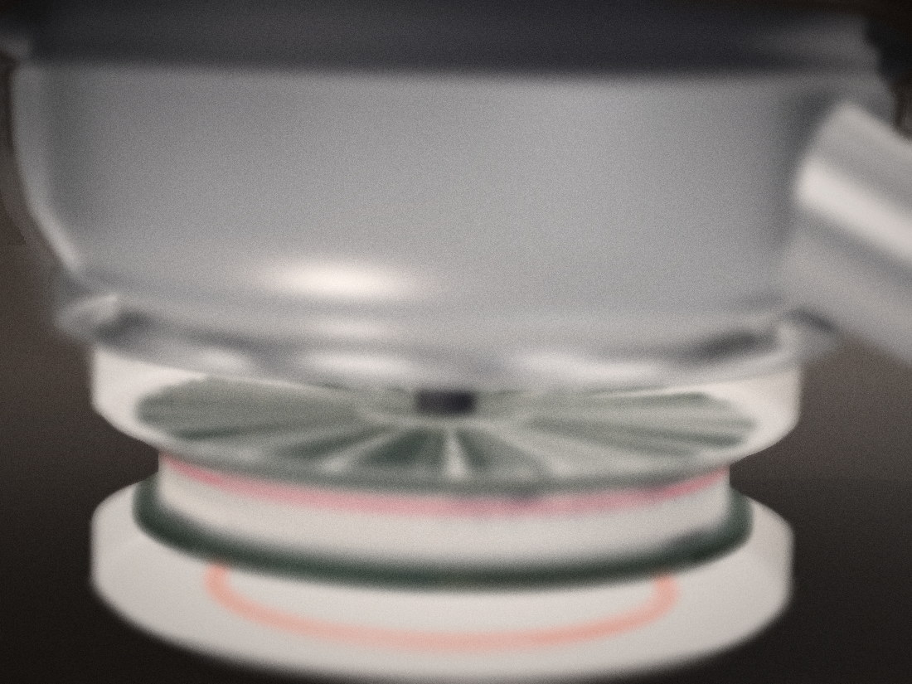
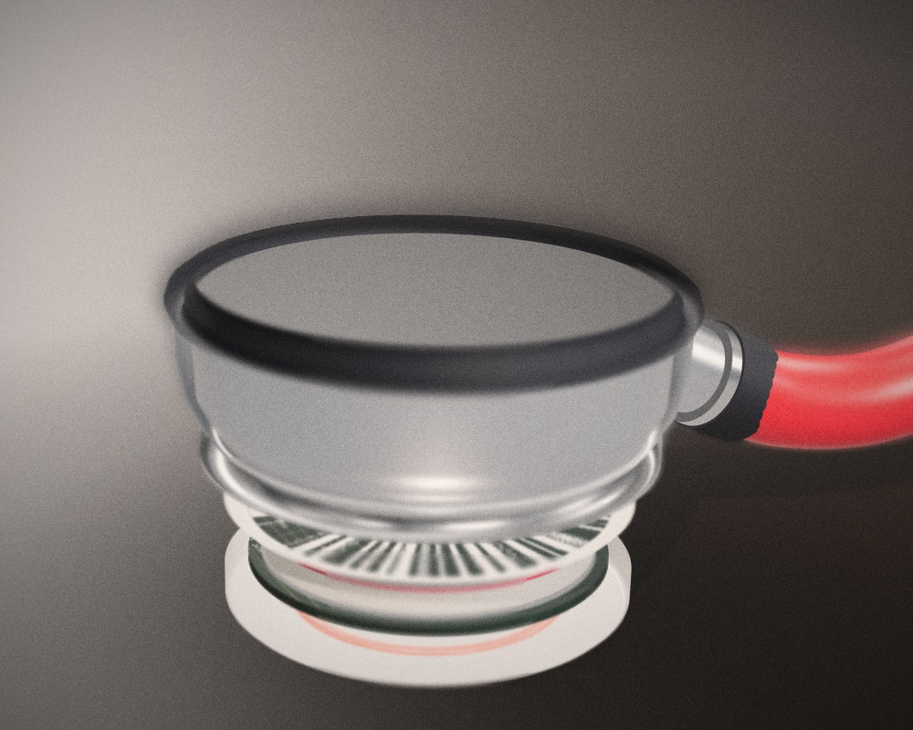

Product
A retrofit,
not a replacement.
The insert replaces the back plate of the head already in the room. The diaphragm, the stem, the tube and the feel stay exactly as they were — which is why the adoption cost is five minutes and not a capital request.



It threads into the cup you already own.
Interchangeable collars seat the insert in 44, 46 and 48 mm single- and double-head chestpieces. Retention is the stock stem collar; sealing is a silicone face gasket with an O-ring groove rated to IPX4. Nothing is drilled, nothing is glued, and the stethoscope works with the insert removed.
Specification
What is inside
the housing.
Third printed revision. Dimensions, radio and audio chain are fixed; tooling and battery certification are the next engineering step.
| Mechanical | |
|---|---|
| Seat diameter | 38.9 mm |
| Fits chestpieces | 44–48 mm |
| Depth behind back plate | 14 mm |
| Mass | 45 g |
| Sealing | Silicone gasket, IPX4 |
| Acoustic port | 3 mm, aligned to the cup |
| Assembly | Threaded collar, no adhesive |
| Electrical | |
|---|---|
| Microphones | 2 × TDK ICS-43434 |
| Audio | 24-bit, 20 Hz – 2 kHz |
| Radio | nRF52840 · Bluetooth 5 |
| Storage | 16 MB, offline ring buffer |
| Battery | 300 mAh Li-Po, USB-C |
| Runtime | ~20 h streaming, ~100 exams |
| Board | 38.9 mm, four layers |
Simulated in research/noise_rejection.py: room noise at 0.72 coherence
between the port capsule and the sealed reference, 4 dB of heart-sound leakage into
the reference, removed by a normalised LMS over 48 taps. Twenty trials, spread 0.1 dB.
A bench figure with a real chestpiece will replace it, and will be published with the
rig it was measured on.
16 kHz, 16-bit mono, 20 ms packets, 40 per cent BLE overhead. Arithmetic from the format, not a measurement: the nRF52840 link has the headroom, and the number that matters for the battery is the 15 mA average, which comes from the 300 mAh cell over a 20 h session.
Companion app
Record, read, keep,
or refuse.
Four screens, all of them working. Press record. Then switch the contact to loose and press it again — that is the state that matters.
Interface demo. Readings are generated by the model on this page — not a patient.
0 findings in this session
A finding carries its site, its band, its likelihood and its quality. Without all four it is not shown.
Stored on the phone, timestamped, exportable. No patient identifiers.
Prototype firmware. Not a certified medical device.
No reading is a reading.
When contact is lost the app does not lower its confidence and carry on. It returns nothing and asks for another recording, because the failure that hurts a patient is a confident normal.
Every examination is evidence later.
Site, timestamp, quality and waveform are stored on the phone with no patient identifiers, and export as WAV and JSON — so a specialist can second-read the actual sound rather than a description of it.
Cost
What it costs,
and what it replaces.
A price with no comparator is a number. These comparators are list prices for instruments that require replacing the stethoscope a clinic already owns.
Component cost from the bill of materials at 500 units. Target list price is $59, sold through distributors and directly to pilot sites. No consumables, no per-exam fee.